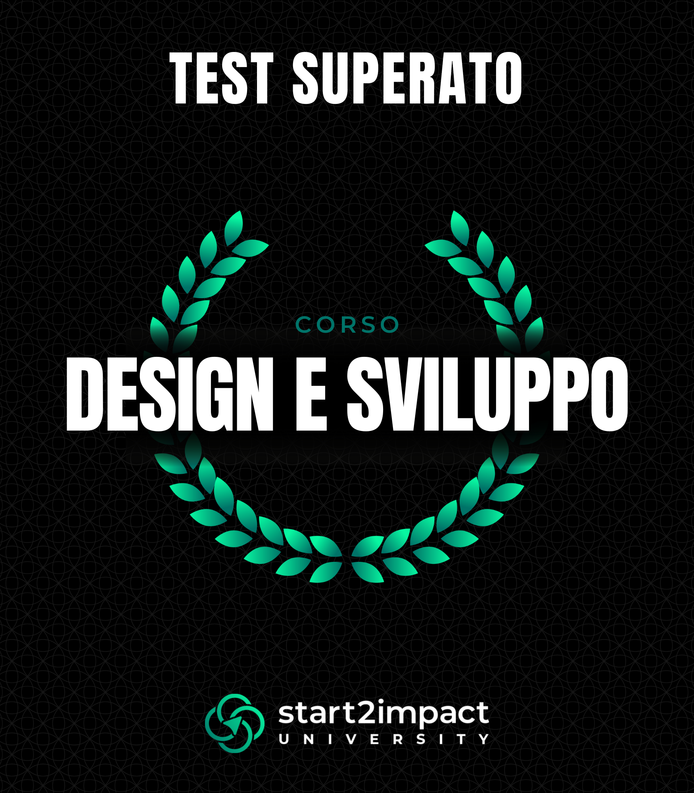
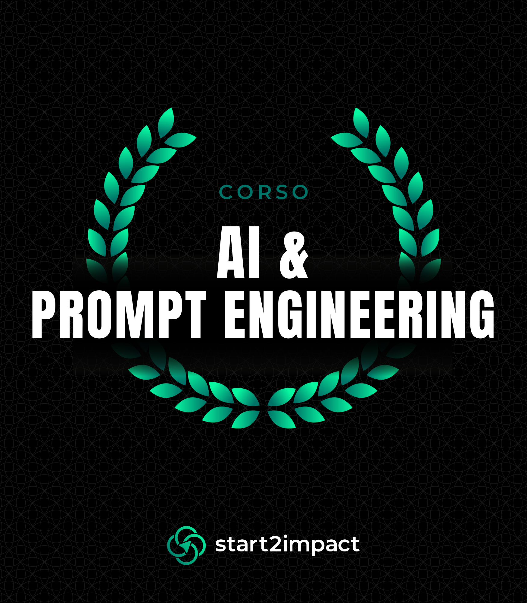

Su di me
Partendo da solide basi in Amministrazione, Finanza e Marketing, ho scelto di seguire la mia vera vocazione: la progettazione grafica e visiva. Attualmente sto affinando le mie competenze con un Master in UX/UI Design presso Start2Impact.
Esperienze & Formazione
Master UX/UI Design
Start2Impact University
Percorso formativo avanzato sulla progettazione di interfacce e esperienza utente.
Visual Designer Freelance
Progettazione di interfacce digitali innovative con un focus strategico sugli obiettivi del cliente.
Amministrazione & Marketing
Diploma superiore che unisce competenze gestionali a una mentalità orientata al mercato.
Le mie Certificazioni

Design e Sviluppo

Grafica

User Interface

Copywriting

Accessibilità

Discovery

Wireframing
